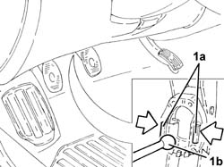
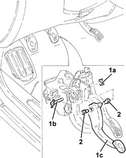

3330B22 BRAKE PEDAL - R+R MANUAL GEARBOX VERSIONS
- Path
- Procedures > 33 BRAKING SYSTEM > 3330 HYDRAULIC BRAKING SYSTEM > 3330B PEDAL UNIT > 3330B22 BRAKE PEDAL - R+R MANUAL GEARBOX VERSIONS
- Kind
- repair procedure (removal / refitting; the operation number is the code)
- Applies to
- all engines; all production periods
- Interactive page
- https://sloeber94.github.io/elrnDB-aGt/en/#/125001341
Applies to: all engines; all production periods
 Removing
Removing
 Refitting
RefittingEnsure that the ignition key is in the OFF position, then disconnect the negative battery terminal (-).
Name | Connector | |
|---|---|---|
- | Battery | See A1B BATTERY ( BATTERY NEGATIVE ) |
Proceed with removal
- 5550D10 brake light switch - r+r
1. Release the retaining clips (1a) and disengage the brake pump (1b) from the brake pedal.

Applies to: all engines; all production periods
1. Remove the stop clip (1a) and partially withdraw the bolt (1b) until the brake pedal (1c) is removed.
2. Recover the bushes.

Applies to: all engines; all production periods
Refitting
RemovingRefit in its seating the brake pedal complete with bushes, then secure it with the bolt and retaining clip.
Refit the brake pump in its seating, connecting it to the brake pedal.
Proceed with refitting
- 5550D10 brake light switch - r+r
.
Connect the negative (-) battery terminal